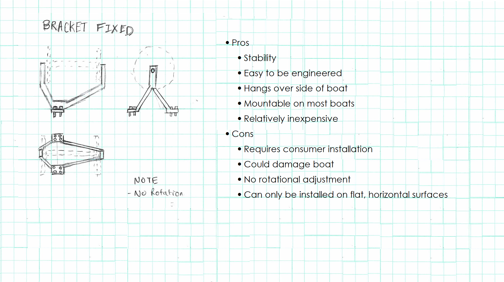
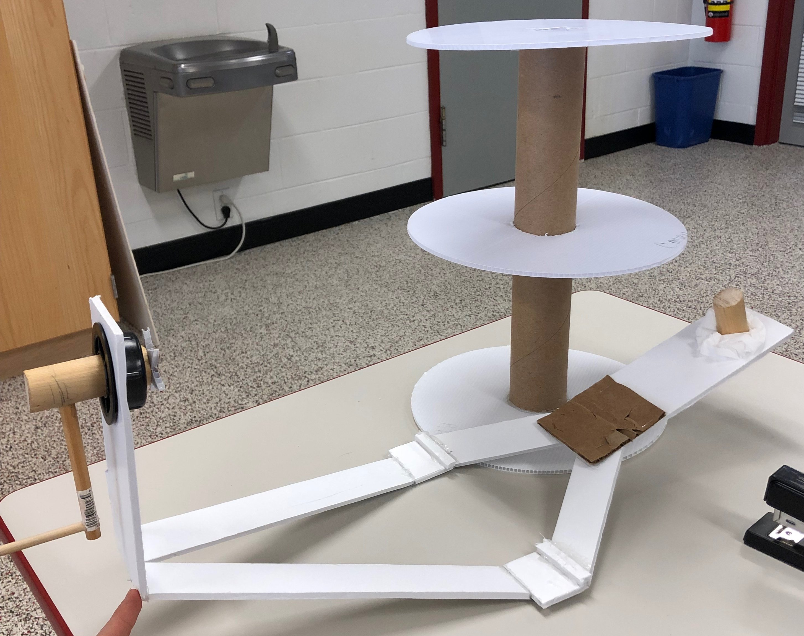
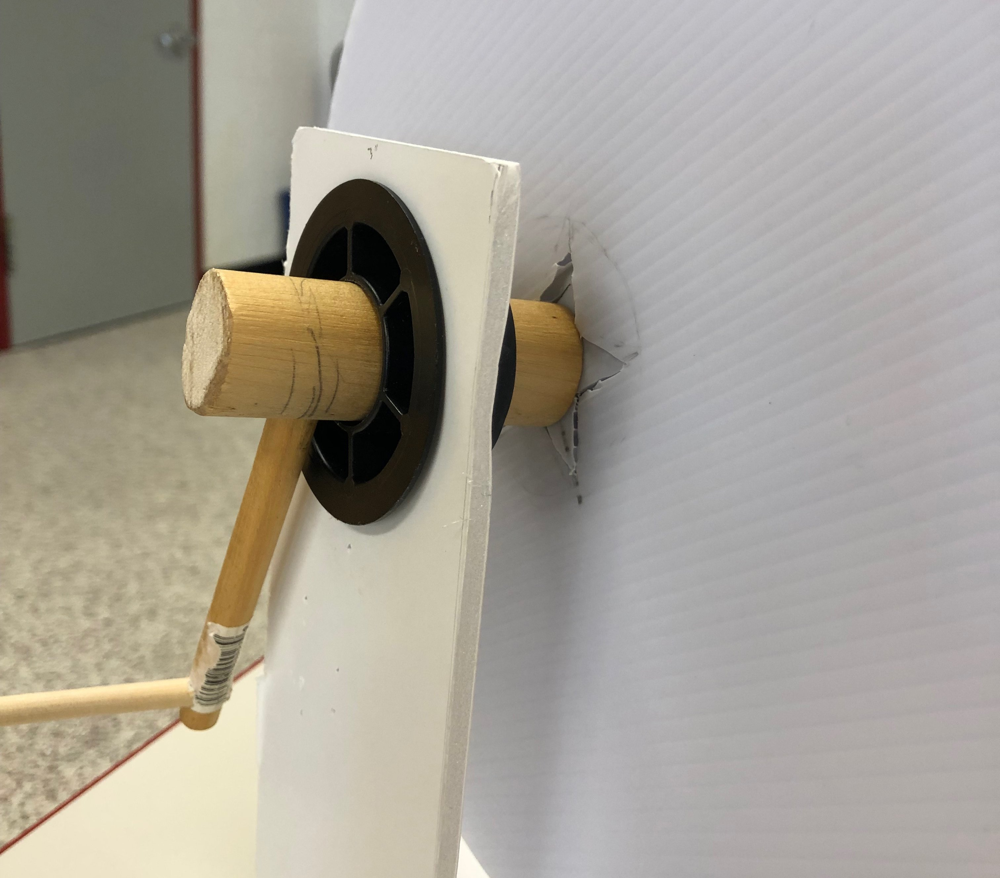
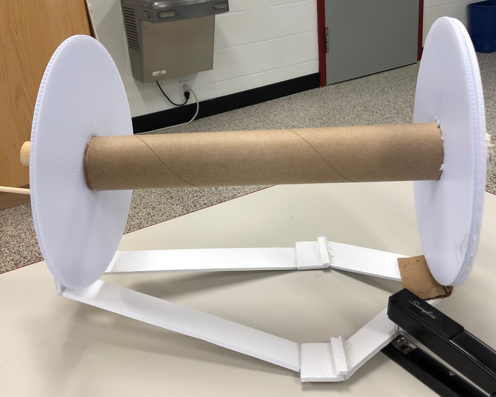
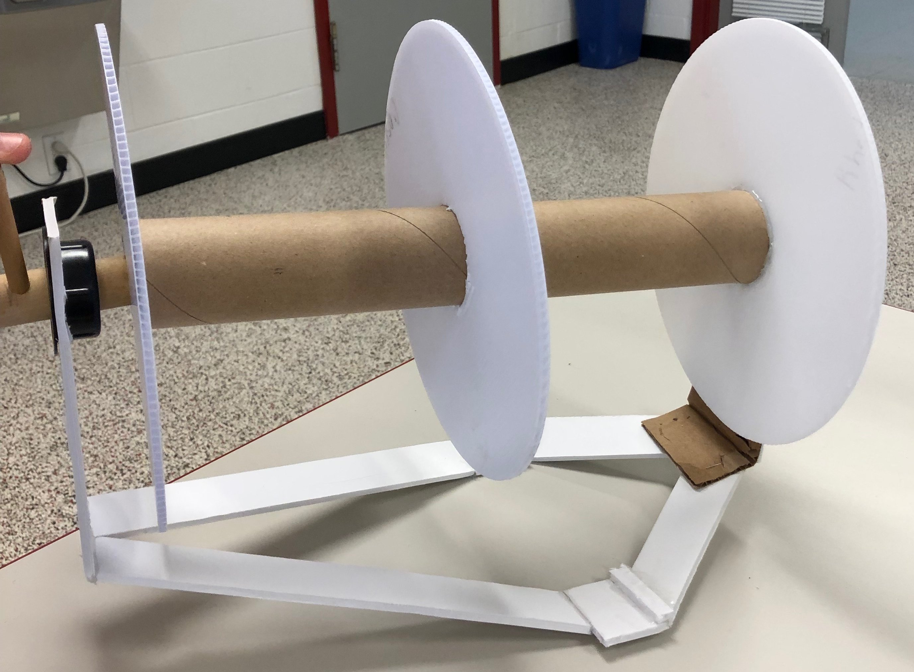

Crabbing trotlines are efficient way for both commercial and recreational crabbers to catch crabs. But trotlines are far from flawless; unlike traps, it can take around 30 minutes to pull up and put out the 1200 feet of line that makes up a trotline, but once they are in the water, crabs can be caught at a much faster rate. Because of this time and effort required to move a trotline many crabbers will avoid moving their lines, even if they are beginning to catching less crabs. When they do move their lines, these crabbers are exposing themselves to potentially lethal bacteria that can be found in the bait, crabs, and water.This bacteria can cause infections that are fairly dangerous, and can potentially lead to hospitalization, amputations, or death. Another mentionable issue of trotlines are tangle. Tangles in the line can take anywhere from a couple of seconds to fix, to the rest of the day on the water.
Vibro can be found in raw seafood, shellfish, and in salt and brackish water. In 2018, approximately 80,000 people were infected with Vibriosis in the United States (CDC, 2018). Most people recover within 3 days with no lasting effects. However, people with a Vibrio vulnificus infection can get seriously ill and need intensive care or limb amputation. One fifth of the people with this kind of infection die, and only within a few days of becoming infected (CDC, 2018). Symptoms of vibriosis include stomach cramping, nausea, vomiting, fever, and chills.
Salmonella is a bacteria that typically lives in animal and human intestines and can be found in feces. The most common method of infection is through contaminated water or food, but can also be contracted by handling animals and raw meat, which crabbers use as bait. Salmonella causes nearly 1.2 million illnesses per year in the United States. Most who have a salmonella infection will have no symptoms, while others can develop diarrhea, fever and abdominal cramps within 1 to 3 days. Most recover within a few days without treatment. Those who do not recover may suffer from severe dehydration, due to the long term effects of diarrhea, which may require medical attention. The longer someone suffers from the effects of salmonella, the higher the chance that they may develop life-threatening conditions, especially if the infection spreads beyond your intestines. Symptoms of salmonella include nausea, vomiting, abdominal cramps, diarrhea, fever, chills, headaches, and rectal bleeding.
Design Brief
A trotline reel could solve all of the hazardous problems caused by direct contact with a trotline. The trotline reel will limit physical contact with bait and brackish water, preventing infections of various diseases. The reel can be either manually or mechanically powered, and will help to facilitate the process required to retract and release the trotline. Additionally, the trotline will be free of tangles and compacted for minimal storage, featuring easy attachment and removal.
Justification and analysis of prior solution attempts
Through our experiences, we know that there is at least one other main alternative to our trotline reel design. The Chesapeake Winder is a motorized trotline winder that spools the line into a basket of your choice. It does not load the line onto the reel. Instead, it takes the place of someone bringing the line in by hand. The device also requires the trotline to be in tension to keep the line running through the horizontal winder plates. This may result in usage difficulty and user frustration if the line falls off the device. The unit itself costs upwards of $745 and runs on a 12V electric motor. It can be mounted using the fishing rod holders and is easily detachable or it can be physically bolted to the boat. Our design will hopefully be significantly less expensive and more convenient with the integration of a reel. Other prior solutions include non-marketed, and personal devices that solve the problem of handling a trotline. Crabbers and other watermen tend to be ingenious and have an aptitude for creating practical devices, so there is a good chance that someone has already created their own trotline reel perfectly suited for their boat and crabbing needs. However, the goal with our design is to create a marketable product that is useful and as universal as possible. Our product would also have a longer life-span and sturdier construction compared to possible personal solutions.
Presentation and justification of solution design requirements
In order to minimize contact with the disease-prone trotline, we decided that the solution would be to have a reel and crank to load the line back on the boat and to set the trotline out. All that would be required of the operator is turning of the crank and moving of the boat to allow the trotline to set itself in place. The solution also needed to hold either two 600 foot trotlines or one 1200 foot trotline because some crabbers decide to use two lines, but the maximum span of a trotline is 1200 feet. Furthermore, the solution must be able to be mounted to as many boat types as possible in the most secure way possible.In order to have a marketable product, it is absolutely necessary to create a product that is useable by a broad consumer base. Almost every boat on the water is different, so the trotline reel will need to have a universal method of mounting or be adaptable to common crabbing boats. As far as physical requirements, the entire setup may be close to 60 pounds when loaded with a trotline, so strength is a primary priority. The material chosen to create the product will have to be rust resistant and maintain quality in a brackish water environment.
Design concept generation, analysis, and selection
After we decided what was required for this reel in order to reach our design specifications, we began to create concepts for the design. We formulated various design concepts for each element of the reel, including reel concepts, mounting concepts, and rotation concepts; as displayed on our website. After creating a considerable amount of ideas and recording them, we began to analyze the pros and cons to each idea. We looked at things such as complexity, viability, and costs. Through extensive research and analysis, we decided upon using the tri-plate reel, a mechanism of our own design, the bracket mount. unfortunately, we determined that the inclusion of a rotation concept would be unnecessary and would just overcomplicate this process.
The tri-plate reel is basic in design but for our purposes it is just what we need. This reel, sized to fit 1200 feet (the legal limit) of line, has a plate on either end of the axle with a freemoving plate between them. This plate is meant to separate the reel into two parts, allowing crabbers to put two 600 foot trotlines onto a single reel. This plate can be move to either end to allow space for a 1200 ft line if the crabber prefers using a single line.
The bracket mount is the use of bracket and screws to fix the reel to the boat. This concept was most appealing because of the fact that it was the most versatile. Although it requires being physically attached to the boat, a crabber won’t have to worry about the reel not being compatible to their ship. A similar idea, the vise grip, could be attached and detached from most ships without physical attachment. The problem with this design was that it would easily become loose, unlike the bracket mount, and losing your reel due to this design would be would be unacceptable, so we went with the bracket mount.

Application of STEM principles and practices
The majority of our mathematical calculations contributed to finding the perfect size trotline reel. We used the volume of a cylinder to determine how much line and bait could fit on our 12” diameter and 14” wide cylindrical reel and compared that with the volume of a 1200 foot line with bait on it. We also used engineering principles to design our prototype which is still under construction, but reflects the concepts we decided to incorporate in our final design (See design process section D). We used our concept designs and available materials to create a working prototype that is still under construction. While working on the prototype, we were able to use the laser cutter to vector cut 3 plastic cardboard disks. We used Autodesk AutoCAD to create a simple 12” wide circle that was the template for the vector cut and ultimately, we used the the 3 circles as end plates on the reel prototype. We have not conducted any studies or tests on our prototype, as it still needs to be refined and finished.
Consideration of design viability
When creating the design for our reel there were some potential issues that may or may not affect our overall design choices. The first of these being the actual line itself. The length of the line spans from ⅛" to ⅜", and the line contains bait every 2-4 ft of line, so a crabbing trotline can get considerably heavy, especially when soaked in water. This not only means that the reel needs to be large enough to hold the line, but needs to be strong enough as well.
This is where location and materials come into play. It is apparent that fixing the reel to the side of the vessel (especially in smaller boats) will not provide enough support to the reel. So to make the design more viable, we had to sacrifice some of its universality. With our new design, the reel will be fixed to the rear of the vessel and will spread the weight of the reel over a larger surface area, this will not only prevent loss of the reel, but will protect the boat and reel from being permanently damaged due to an excessive load.
Just as important as the design is the materials. Seeing how most crabbing takes place in salty, brackish water, the reel and mount must be made out of materials that won’t rust or corrode, such as plastics or stainless steels. We plan on using plastics for the reel plates, a viable option, the problem comes with a stainless or galvanised steel. These materials can be expensive and harder to work with without the use of metal working tools, such as a welder. On top of this, we may need to purchase paint and oils for the steel to help with rust prevention. This is where our final and largest viability issue comes into play, costs. Purchasing ball-bearings alone can set the budget back $20 to $40, and stainless steel bearings can cost around $__ (this needs to be updated). *Material and cost calculations to be discussed*
Construction of a testable prototype
To show a proof of concept, we used available materials in the classroom to create a working prototype, such as foamboard, cardboard, dowel rods, and hot glue. Some precision was sacrificed to show the concept as accurately as possible with the materials we had on hand.
After completing the proof of concept (1st Prototype), we began implementing what worked and changing what didn’t, the first change was the mount, it was unstable and could be made easier to make and use. After updating the prototype, using inventor to model our new design, we made a 3d rendition. We then transferred it into AutoCAD so we can potentially cut it out via a plasma cutter.
The axle will require a 1 inch thick stainless steel rod, which was supplied to us. This rod will be cut to a length of 14 inches and 3, 12 inch plates will be fixed onto the axle to create the reel. This will hold over 1200 ft of quarter inch line with 300 baits attached. Ball bearing will then be fixed onto both ends on the reel, and a plate which will allow the fixing of the crank will be connected. The removable crank will sport holes for attachment via nuts and bolts. The mount will be plasma cut out and formed into shape.

First prototype concept featuring the fixed mounting bracket and Tri-Plate Reel

Crank mechanism conceptual prototype

Prototype with Tri-Plate Reel (middle plate pushed to side to allow for full 1200 foot line)

Prototype with support structure and Tri-Plate reel in place
Prototype testing and data collection plan
To test our prototype, we plan on running it through a few tests. These tests will see if our reel is sized properly, is strong enough to support its load, and properly executed our major design missions. For the first test, we will take 1200 ft of ⅛ inch line, then ¼ inch, then finally ⅜ inch, and load it onto the reel, once without once with “bait” attached (we will use something similar in weight and size). This will prove if our reel calculation were correct or not and determine the final diameter of the plates and axel. These experiments will also be used to test the strength of the prototype and will show use if design changes are needed. Lastly, during these tests we will be making sure it follows our main design missions. We will be looking to see if this prevents tangles, limits contact with the line, quickens the process of pulling up the line, and is storable after use.
We will record the time it takes to pull up the line for each test and compare it to the time it took to pull it up by hand. This will show us how greatly the reel expedited the process and if changes must be made. We will also record the overall weight of the line. We can use this data to find out how much weight the reel can reliably and if it needs to be strengthened. We will also be looking for any tangles in the line and record them.
Testing, data collection and analysis
After testing the first prototype, we found some critical issues. The split axle made for an unstable, wobbling reel and would not be the best choice for the heavy load that this reel will hold. The base also wasn’t going to cut it. With the heavyweight of the 1200ft line, the metal base would surely warp over time, threatening to damage the boat and loss of the reel, and an angled support would be unnecessary for the design.
Our new design sports a flat mounting base that can be mounted on the rear of a vessel and a detachable crank which is fixed via two bolts. We also fixed the ball bearings to the axle of the reel instead of having it fixed to the mount. To test this new design we ran it through the tests previously discussed.
Documentation of external evaluation
Having Mr. Bogdziewicz look at our prototype, he brought up some compelling points. Having our reel brought in by manuel cranking can be tiring. Though not nearly as bad as pulling it in by hand, you would have to spin the crank hundreds, if not thousands of times to pull up the entire line.Another issue brought up was the inclusion of metals on our design. Being in brackish waters to crab can expose the reel to corrosive saltwater that can cause rusting in sensitive areas. Stainless and/or galvanized steel would be needed to minimize the damage along with the use of oils on the ball bearings to prevent rusting.
Reflection on the design project
Initially, the project started with a lot of momentum and enthusiasm for creating a marketable design. Our team immediately got to work planning, brainstorming, and recording ideas while strictly adhering to the engineering design process. In the early phases of the project, there was plenty of time for recording progress and conducting the project in an ideal fashion. Our brainstorming ideas and concepts seemed to be sufficient for a feasible design, and we continued forward at a consistent pace, designing, planning, recording, and thinking ahead. However, as we approached the prototyping phase of the engineering process, we started running into roadblocks with design feasibility. As we started turning our concepts into physical ideas or thought about the concepts in a real-world production environment, nothing seemed to work out as planned. We discovered many flaws with the biggest factors in our trotline reel concept including the crank mechanism and detachable wheel. We also changed our support structure design after we created a prototype because we realized there were better solutions that more more simple to produce. After we hit the roadblocks, progress slowed and our priority focus shifted to creating a working and feasible product. Ultimately, the design deadline approached before we could make significant progress towards a product that we thought would be perfect for consumers.